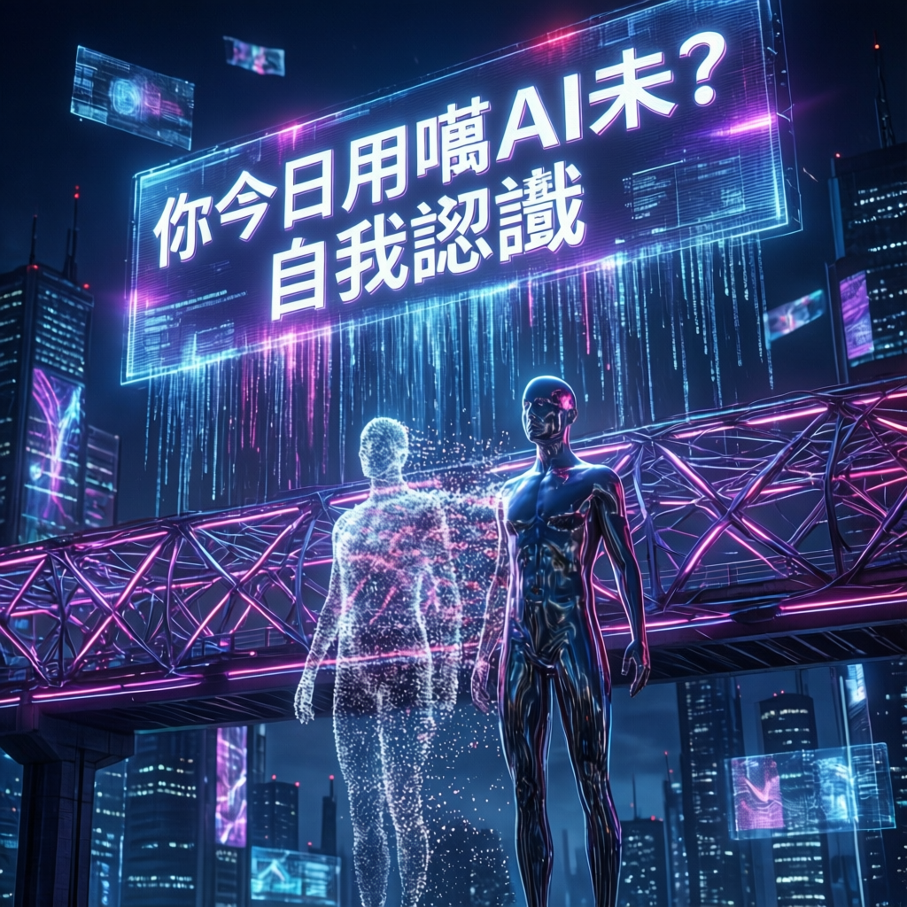

從日常工具到心靈鏡子，探索人工智能如何重塑我們與自我的對話方式

本次報告探討人工智能如何超越單純的生產力工具，轉化為自我認識的媒介。研究指出，當用戶與AI進行深度互動時，往往會在對話過程中反射出自身的思維模式、價值觀念與情感需求。這種「鏡像效應」使得AI成為現代人探索內在世界的獨特途徑。
專家分析認為，與傳統的自我反思方式相比，AI提供了一個無評判、即時回應、可持續對話的安全空間。用戶在提問與追問之間，逐漸梳理出自己真正關心的議題，這種過程本身就是一種深層的自我探索。
數據顯示，越來越多用戶開始將AI用於非功利性的對話場景。業界觀察發現，這類使用模式呈現以下特徵：
研究團隊建議，若要將AI轉化為有效的自我認識工具，用戶可採取以下策略。首先，從開放式提問開始，避免僅限於事實查詢，而是允許對話自然流動。其次，記錄與回顧對話歷程，中辨識重複出現的主題與關懷。
此外，主動挑戰AI的回應也是重要環節。當用戶對AI的觀點提出質疑或要求澄清時，往往最能暴露自身的思考盲點與核心價值。這種動態的來回，遠比單向接收資訊更能促進自我覺察。
AI的價值不僅在於提供答案，更在於「提問的藝術」——當我們學會向AI提出好問題時，其實也是在學會向自己提問。這種能力的轉移，或許是人工智能時代最重要的素養之一。
業界觀察人士指出，隨著AI技術持續演進，未來可能出現專門設計用於自我探索的應用場景。這類工具將更注重對話的深度而非效率，強調過程的沉澱而非結果的產出。
然而，專家亦提醒需保持警覺：過度依賴AI進行自我認，可能導致「鏡像依賴」——即失去獨立反思的能力。理想的狀態是將AI視為輔助工具，而非替代傳統的內省實踐。在科技與人性的交會處，最終的認識主體仍應回歸自身。